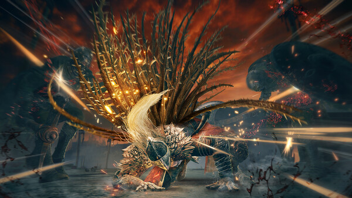
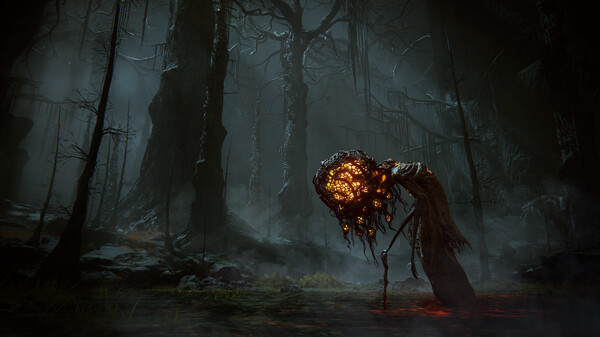
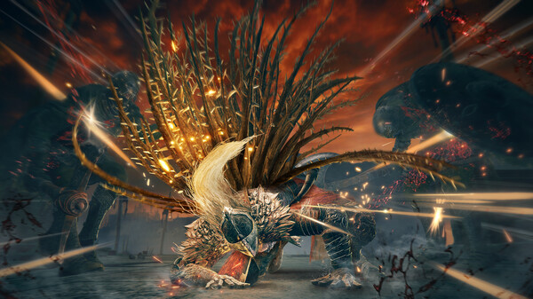
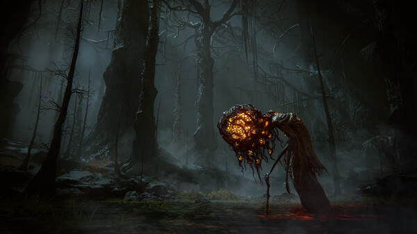

Elden Ring
EEN NIEUW WONDERBAARLIJK AVONTUUR STAAT JE TE WACHTEN. Verrijs, Bezoedelden, en laat je leiden door genade om de kracht van de Elden Ring te gebruiken en een Elden Lord in The Lands Between te worden.
Genre: Action RPG
Ontwikkelaar: FromSoftware
Uitgavedatum: Winter 2021
 




Systeemeisen
MINIMUM:
Vereist een 64-bitsprocessor en -besturingssysteem- Besturingssysteem: Windows 10/11
- Processor: INTEL CORE I5-8400 or AMD RYZEN 3 3300X
- Geheugen: 12 GB RAM
- Grafische kaart: NVIDIA GEFORCE GTX 1060 3 GB or AMD RADEON RX 580 4 GB
- DirectX: Versie 12
- Opslagruimte: 60 GB beschikbare ruimte
- Geluidskaart: Windows Compatible Audio Device
AANBEVOLEN:
Vereist een 64-bitsprocessor en -besturingssysteem- Besturingssysteem: Windows 10/11
- Processor: INTEL CORE I5-8400 or AMD RYZEN 3 3300X
- Geheugen: 12 GB RAM
- Grafische kaart: NVIDIA GEFORCE GTX 1060 3 GB or AMD RADEON RX 580 4 GB
- DirectX: Versie 12
- Opslagruimte: 60 GB beschikbare ruimte
- Geluidskaart: Windows Compatible Audio Device